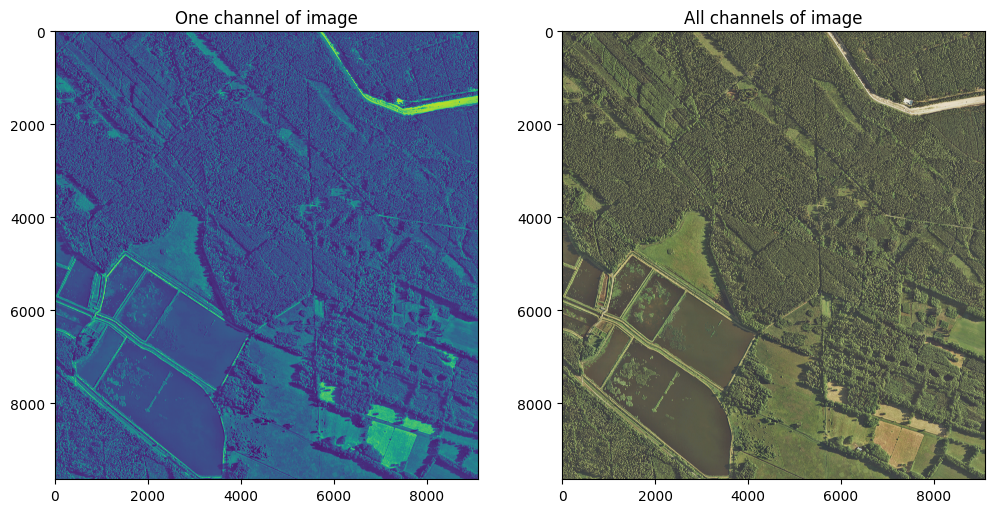
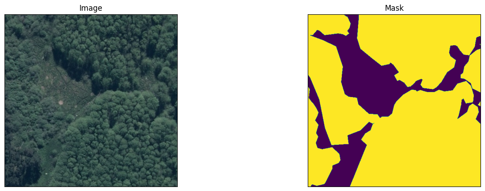

Land Segmentation using Satellite Images
Achieved a segmentation accuracy of 85%.
Project Overview
Combined Effcient-Net encoder and CNN to predict forest area using 7000+ TIFF images. Achieved a segmentation accuracy of 85%.
Project Preview
Open Github RepositoryRepository Structure
1. Efficient Net.ipynb: Integrates EfficientNet for improved accuracy and performance. Optimized for better performance on larger datasets with fewer parameters.
2. Sequential_CNN_model.ipynb: Implements custom CNN layers for segmentation tasks. Designed for small to mid-sized datasets. Focused on segmenting Earth-related imagery for environmental or geographic applications.
How to Use This Repository
1. Clone the Repository
To get started, clone this repository to your local machine using the following command:
git clone https://github.com/omkoli3114/Earth-Bender.git
cd Earth-BenderProject Gallery


×